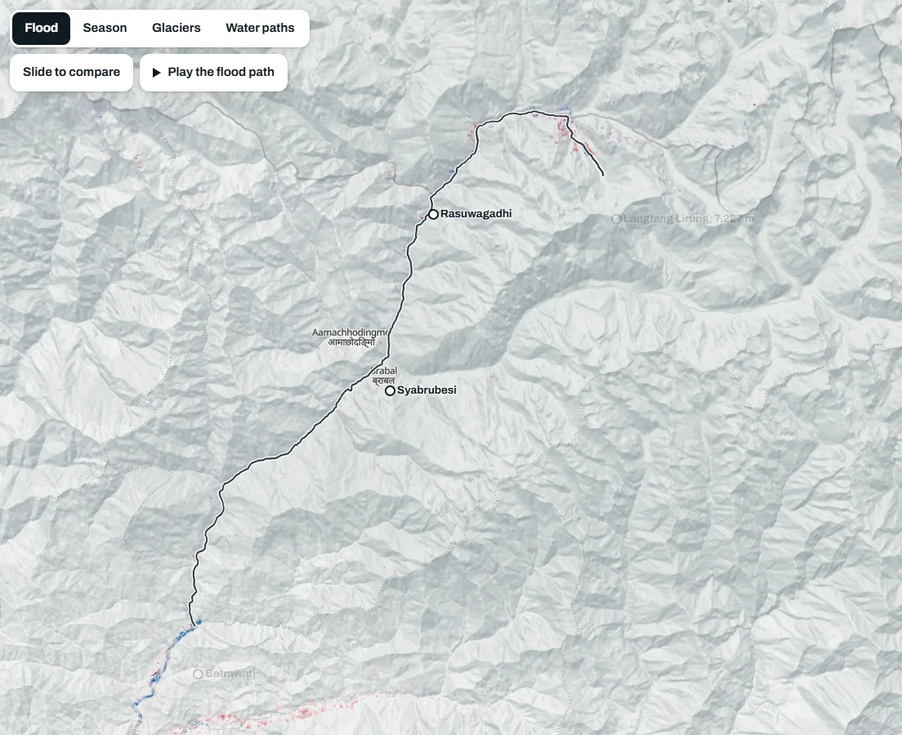
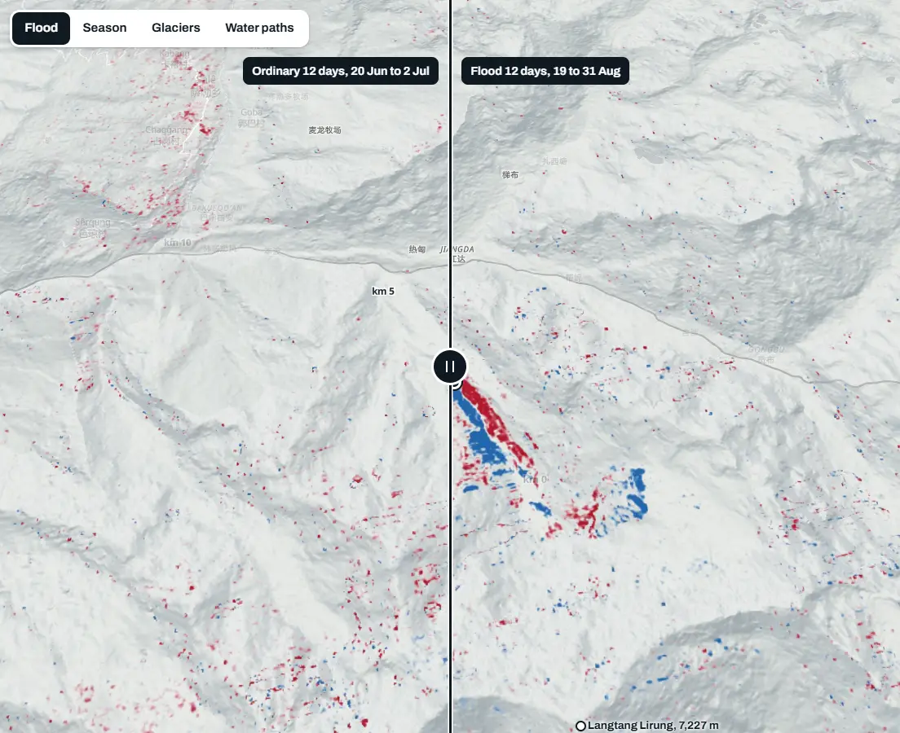
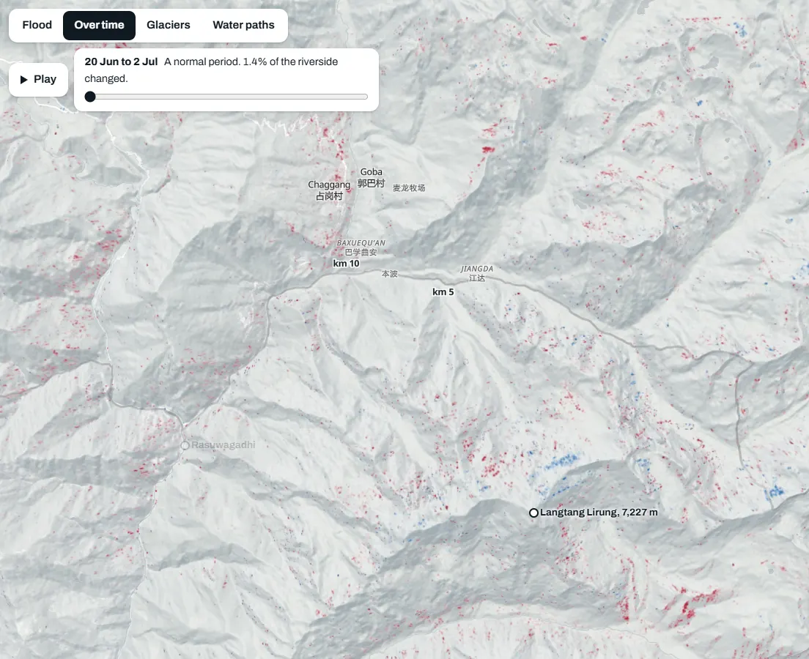
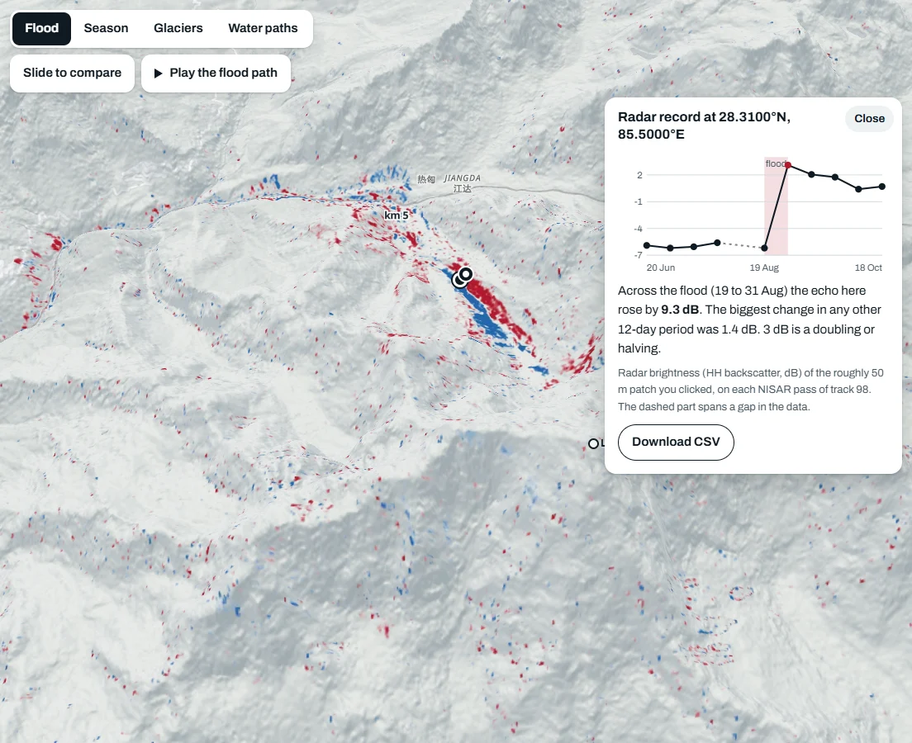

A piece of a mountain fell into a river in Rasuwa. This is what a radar satellite saw.
The flood of 26 August 2026, followed from space with NASA and ISRO’s NISAR radar.
Prabesh PathakNASA Space Apps Challenge 2026, Ithari. Challenge: Dancing with the SARs.
When a flood hits, people ask two things.
Where did it go? How bad was it?
Same valley. Before the flood, and after.
NISAR comes back over the same path every 12 days. I compared one visit with the next.
Left: a normal 12 days.
Right: the 12 days with the flood.
Red or blue? The ground changed there.

Recorded from the project siteNext to the river, this is what changed
20.7% of 129,965 radar pixels within 100 m of the river changed by more than 3 dB, against a median of 1.25% in seven other periods. Near the source it reaches 88%.
Maybe it always looks like this? I checked.
- Other dates.Eight periods, June to October. Only one looks like this.
- Other rivers.Four nearby, same days. Nothing.
- Other angles.Three satellite paths. The same trail on all three.

Recorded from the project site. Each frame is one 12-day period.Click anywhere. See what happened there.
This spot was flat for two months. Then the flood came and it jumped 9.3 dB. It never went back down.

Recorded from the project siteWho did what
Mine
The idea and the research- I picked this flood and this valley
- I decided who it’s for
- I read the reports, directed the work and checked the results
NASA data
All of the data- NISAR radar, 14 passes on 3 tracks
- NASADEM elevation
- High Mountain Asia glacial lake inventory
SI, as the rules allow
Claude Fable 5.2, from Anthropic- Wrote the code that downloaded and processed the data
- Built the website and these slides
- Every use is listed on the site
This can’t warn anybody. The satellite only comes every 12 days. It shows where the ground changed, not what people lost.
nasa.nesomotions.comCode: github.com/Prabesh002/NASA